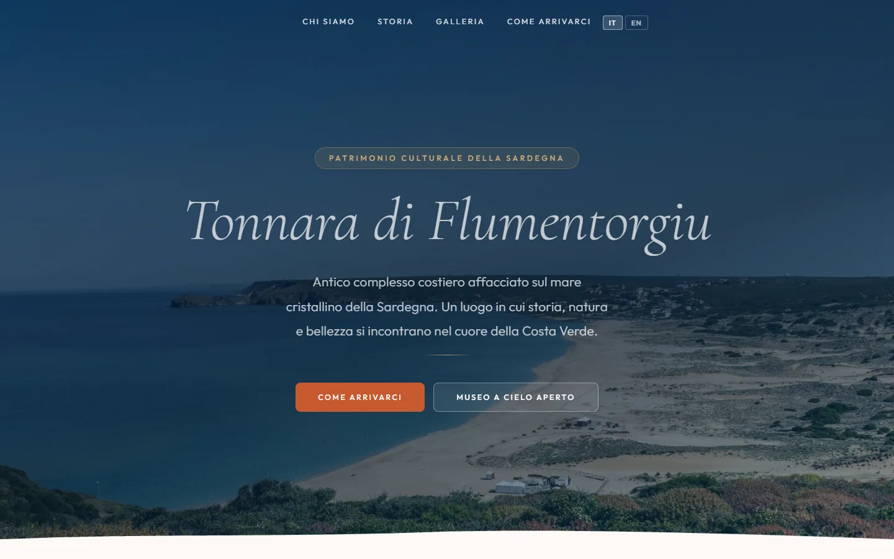
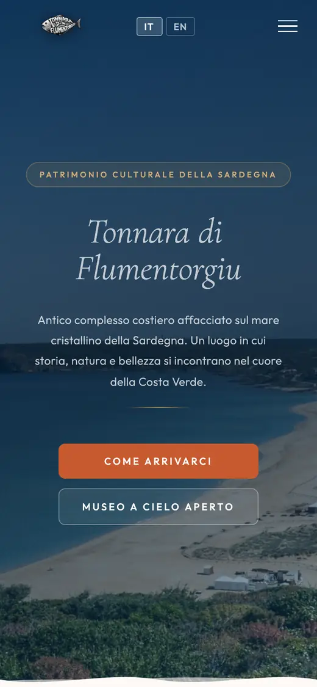
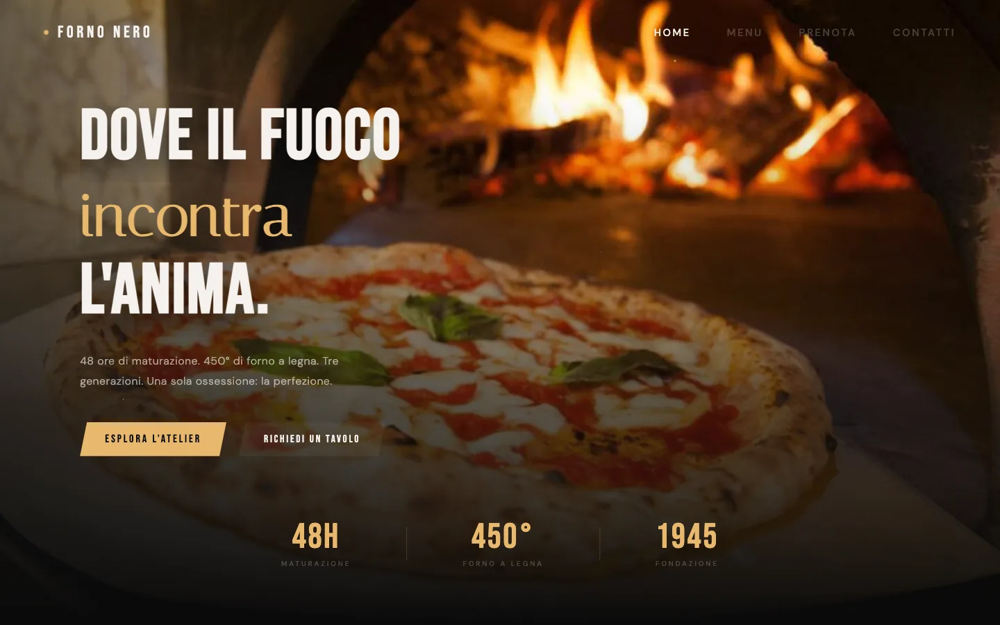
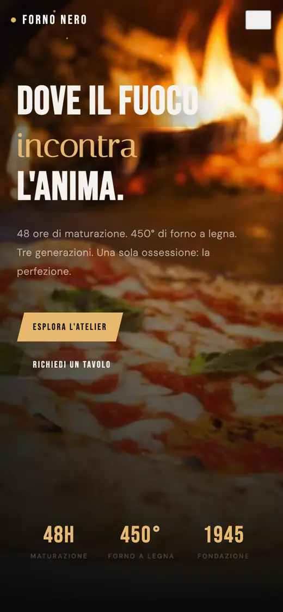
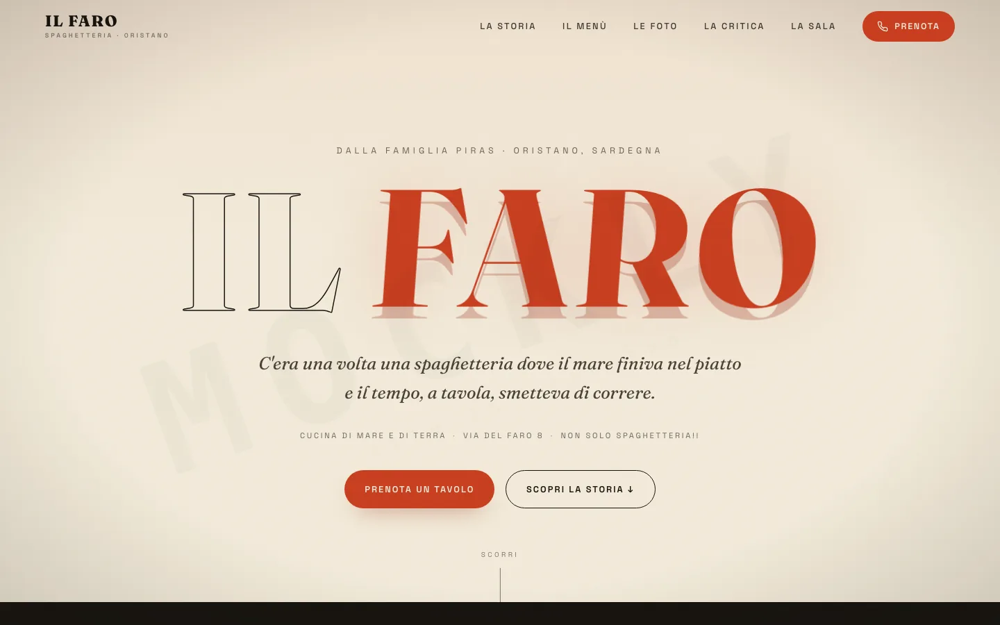
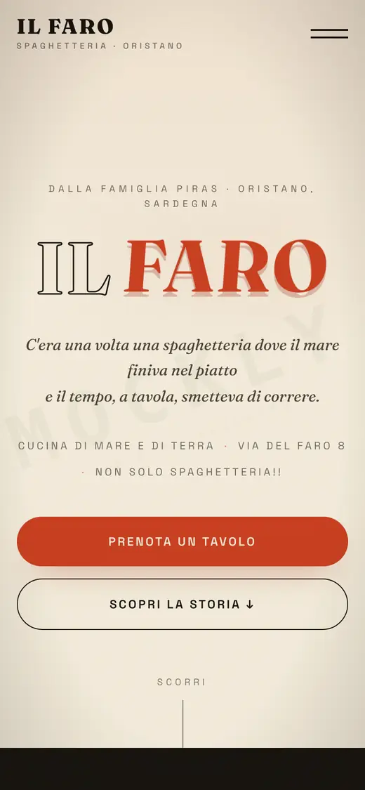

Ovunque Accessibile
Una mappa dei locali accessibili: chi usa la carrozzina o fa fatica a camminare cerca un posto, legge la scheda e segnala ingressi, gradini, bagni e ascensori.


Siti fatti con Mockly, insieme a Adriano e Simone. Io mi occupo di sviluppo, interfaccia e visibilità su Google.
Siti e web-app online, per clienti e progetti veri.
Una mappa dei locali accessibili: chi usa la carrozzina o fa fatica a camminare cerca un posto, legge la scheda e segnala ingressi, gradini, bagni e ascensori.
Il sito di un locale sul mare della Costa Verde, pensato per il telefono e preparato per farsi trovare su Google.


Il sito del nostro gruppo: cosa facciamo, i prezzi, il portfolio e come contattarci.
Le migliori demo costruite da Mockly per mostrare cosa sa fare un sito. Passa sopra a un nome per vederla.






Sono demo: le attività sono di fantasia e servono solo a far vedere lo stile e la struttura di un sito.